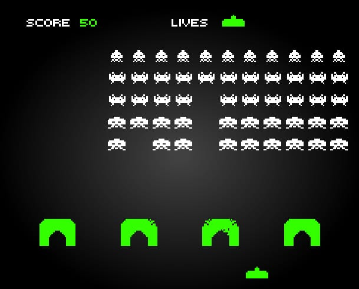
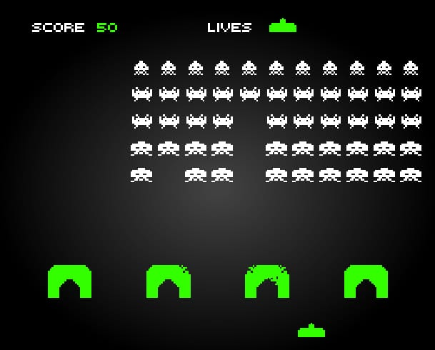

11/23/20: This is made as a class project. Since Space Invaders is similar to one of the demo projects, I think I will reuse some of the functions from that project and modify them. I plan on using keyboard controls instead of mouse controls, so I have to find out how to do that. I also have to find reference images to pull the sprites from. I'm not focused on the sounds right now, so I'll work on that some other time. I can picture the coding process for this project being divided into two parts: the setup phase (a.k.a. the slog), and the creative design phase. The slog will consist of adding in all the sprites and adding basic functionality to everything so all the code later on will be as simple as plugging in functions and using variables. The creative design phase will mainly involve designing the levels and focusing entirely on making the levels work. I just know the slog will be extremely tedious and boring, so I want to get that done as soon as possible.
11/24/20: I'm starting to get a solid idea of how I want to structure this project. The ultimate plan is to have levels 1 and 7 be the same while the rest of the levels are randomly selected from a pool. For now, I will have specific levels for the prototype and I'll convert those levels to the pool once the prototype is done. Today, I created many different scenes for the game and loaded in the sprites. Since there will be intermission scenes that tell the story and tell you what you need to know for the level, there will definitely be more than just a start scene, a game scene, and a game over scene.
11/25/20: Today, I added keyboard controls so I can move the cannon. I made it so some levels will let you move up and down while others won't. I also decided to have all the aliens be spritesheets since they will be animated and there's a loop variable for them. This means I don't have to create two different versions of every alien and have twice the amount of assets. I'm also starting to think of cool ideas for a boss battle, but that will definitely be the most difficult level to make. I'll have that as a stretch goal for the prototype.
11/26/20: Today is Thanksgiving. Since I'll be spending a lot of time hanging out with family, I will spend much less time on this project today, but I will still try to get as much done as possible. Today, I added the aliens into the game scene and made them move and be able to be shot. Since Levels 1 and 3 are similar in this regard, I tackled both of them at once. I made the barriers and the alien lasers and added functionality to them. I also discovered that I can use the color of objects to trigger events, but in order for the colors to look right, the sprites have to be white or grayscaled. This isn't a problem for me since all of my sprites are mostly one color.
11/27/20: Today, I made explosion effects for the assets so it looks like there's impact when something is shot and I made the scenes properly change when you win or lose. I also took this opportunity to spice up the scenes so they don't look so plain. Now that I got this done, I'm finally out of the slog and onto the fun part of this project: the creative design phase. During testing, I realized that the collision box for the cannon makes it look like you die if the lasers don't even touch you. So I made a custom hitbox for the cannon to prevent this. I'm starting to get even more ideas for the boss battle, and now I'm considering having RNG decide between two different types of boss battles against the same boss. I hope I'm not overscoping this project.
11/28/20: Today, I created Level 2. This involved having the aliens move in a circle while always facing towards the center of the stage and firing lasers towards the center too. This required a lot of knowledge of geometry, and what I learned about moving objects in a circle in Interactive Media Development definitely helped too. I also changed the code that helped me use custom fonts by using another external tool: the Google WebFont API. I decided to use this instead of a CSS file because it was random whether the font was loaded or not, and I didn't want that. Also, I'm starting to find it very difficult to scroll through my main JavaScript file, since there is over 1000 lines of code now. I often find myself having to minimize some of the functions just to be able to scroll through the code faster.
11/29/20: Today, I imported audio into my game. Some audio fits with the game, and others just kind of come out of nowhere, and that's the point. I used random sound effects and music off of the internet and from YouTube. All of which are listed in the references. I'm also finally starting development on the boss battle, which I will call Boss Bizarro. So far, I added a functioning health bar to correspond with a health variable. I was planning on getting more done today, but I ended up procrastinating. I'll make sure that doesn't happen again.
11/30/20: I spent all day today working on Boss Bizarro. So far, I created his basic 3 lasers attack and his beam attack. I also reworked Level 2 so the aliens look more organized. I was getting a bug where the level was unbeatable sometimes if the game registers the wrong alien when you shoot it. That's why I changed the level like this, and honestly, I like it better like this. Since the prototypes are due tomorrow, I want to finish the boss battle tomorrow and add any final touches to the game before I submit it. Also, is it wrong to procrastinate by playing the game that you're making? I find myself having too much fun playing this goofy game.
12/1/20: I gave Boss Bizarro another attack where he snaps his fingers and gives the player a random status effect. With that, Boss Bizarro is all finished for the prototype. I finalized everything and ironed out the details and got rid of some extra bugs. I also added a pre-title scene because Chrome doesn't allow autoplay for audio and it screws up the title screen.
12/2/20: I didn't work on the game at all today because I was busy working on an assignment for another class. Tomorrow, I should be able to continue working on the game.
12/3/20: Back at it again with this project. I did a lot of minor tweaks to improve the overall quality of the game thanks to the feedback I received from the professor and other students. I also designed the site page itself to give it the atmosphere that I'm trying to show in the game. Most of all, I completely restructured the game by adding the middle levels to the RNG pool so now all of the middle levels show up in random orders. It also opened the way to add more levels into the game. I decided to make these extra levels focus on the different status effects that can occur on you. The only one that's not given a level is the one where you turn pink because that's a Boss Bizarro exclusive status effect.
12/4/20: I spent a lot less time on this game today because I was taking my Calculus finals. But I did work on some of the extra levels. So far, I made two new levels: Hijack and Dark Destruction. Hijack focuses on the status effect where your controls are reversed, and the level itself is really weird. Dark Destruction is made so you fight in a dark atmosphere where you can't see anything. There are occasional lightning strikes that temporarily light up the place.
12/5/20: Today is the last day to work on this project, and I went full force. I created the rest of the levels, added music to every level, fixed a ton of bugs and glitches along the way, and added some visual flare for defeating the boss, as well as updating the win scene because this isn't the prototype anymore. There are a lot of things I came up with in my proposal that I didn't implement, but I think this game is fine without them. I think this project is all good to go now. As of this day, Space Invaders: The Bizarro Dimension is finally complete!
Background:
 https://www.pinterest.com/pin/14284923789851337/
https://www.pinterest.com/pin/14284923789851337/
Used for getting Space Invaders assets:
 https://www.smithsonianmag.com/science-nature/original-space-invaders-icon-1970s-America-180969393/

https://inews.co.uk/news/technology/space-invaders-at-40-the-arcade-classic-game-which-shaped-gaming-169957
https://www.smithsonianmag.com/science-nature/original-space-invaders-icon-1970s-America-180969393/

https://inews.co.uk/news/technology/space-invaders-at-40-the-arcade-classic-game-which-shaped-gaming-169957
Space Invaders original sound effects (player shooting, alien killed, and player explosion): https://www.classicgaming.cc/classics/space-invaders/sounds
Alien Shooting sound effect: https://www.storyblocks.com/audio/stock/8-bit-zap-sound-2-slhndq0hlprk0wy4wgg.html
Nintendo Switch click: https://www.youtube.com/watch?v=NjTGlGgL6ZE
Sound effects from Boss Bizarro charging attacks and firing energy beams comes from Yu Yu Hakusho. https://www.youtube.com/watch?v=cmAMZaHF8vI
Steam train whistle: https://www.youtube.com/watch?v=6KJkXSIXpUI
Minecraft glass breaking sound effects: https://www.youtube.com/watch?v=8S2Abu3zPz8
Thunder sound effects: https://www.freesoundeffects.com/free-sounds/thunder-sounds-10040/
Finger snap: https://www.soundsnap.com/search/audio/finger%20snap/score
Space Invaders GBC - Title Screen and Mercury https://downloads.khinsider.com/game-soundtracks/album/space-invaders-gbc-gb
Super Mario 64 - Merry-Go-Round https://www.youtube.com/watch?v=1FH99_W3qn4
pizza time https://www.youtube.com/watch?v=lpvT-Fciu-4
Persona 4 Golden - Shin Mitsuo Tensei (Revelations: Mitsuo) https://www.youtube.com/watch?v=En5hqJ6jD54&t
Persona 4 - Game https://www.youtube.com/watch?v=SuMEf-5Is4w
Resident Evil Code: Veronica - The Suspended Doll https://www.youtube.com/watch?v=6AI3pmwKnMw
Super Mario 3D World - Beep Block Skyway https://www.youtube.com/watch?v=W1jh40S5sFY
F-Zero GX - Infinite Blue (I'm using the the final lap version specifically) https://www.youtube.com/watch?v=hfcueookXUY
Super Mario Galaxy - Freezeflame Galaxy (Ice) https://www.youtube.com/watch?v=MpxB-324hTA
Since I wanted to make Space Invaders, Circle Blast already laid the groundwork for me, so I used that tech stack and built my project off of it.
I wanted the game to be as fun as possible, so a heavy focus was put on controls and difficulty. I made sure that the controls weren't clunky and I made sure that the game wasn't too difficult where people don't want to play it again but it also wasn't mind-numbingly easy where people get bored. I made sure I accomplished this by posting my game in the crit groups and receiving feedback about the game.
Since I wanted to recreate Space Invaders, I decided to go with an 8-bit design, mostly. I made sure everything fits that aesthetic and nothing looked out of place.
Since I don't want anyone to be confused about the controls or the status effects, I made sure to explain them before each level. But at the same time, I left out enough information so people will be surprised by how each level was structured, and especially, how the boss fights.
I pulled some images off the internet and I drew others myself, but I manually cropped and resized all of them to make sure they worked properly in the game. I didn't want any hitbox jank whatsoever.
I have so many sounds in this game that they make up the bulk of this project in terms of data. Each and every sound is used to enhance the experience. Sound effects play when they need to and music loops properly. It got to the point where having a level without music seemed out of place.
I did reuse Press Start 2P from Part 4 of Circle Blast because it fit the aesthetic of my game the best, but everything else was completely replaced. Despite the fact that I built this game off of Circle Blast, it is almost impossible to recognize Circle Blast in this project now.
All of the HTML in the game file and this documentation file are validated and the CSS is validated too. The CSS is also moved into its own file.
All of my ES6 classes are located in the classes JavaScript file. They are used to create still sprites and rectangles for lasers and hitboxes. All of them are extended to either PIXI.Graphics for basic rectangles or PIXI.Sprite for actual sprites.
I never used any DOM traversal in this project, so there are no uses for querySelector() and querySelectorAll().
I structured my game so from levels 2 to 6, the levels are randomized. So for example, on your first run, you get The Carousel Crew as your second level, but on your second run, you get Hijack as your second level instead. By using RNG like this, I also made an extremely hard level, simply called DANGER!, but the chances of getting it are very low. You have to be REALLY unlucky to get this level.
RNG makes up a HUGE portion of this game, and that's all to keep this game from becoming predictable. There are a lot of aspects of this game that use RNG. Including but not limited to:
All of the sounds are pulled from somewhere on the internet, and, as expected, none of them were at the proper length that I wanted them to be at. So I had to manually trim these sounds to be the proper length. I also had to trim the music so they loop properly.
The idea behind this game is that it's similar to Space Invaders, where you're a little green cannon shooting aliens, but there are a lot of whacky twists that set this game apart from the original. Who knows what could happen? You could get a crazy powerup for a level, or maybe you'd be playing Galaga all of a sudden. Or maybe, just maybe, the level could get so outrageously difficult that enemies start moving so fast that they look like blurs as they rain down lasers at you while the Pizza Time theme from the Spider-Man 2 video game plays in the background because who knows why!
Fixed shooter
Desktop only
Aliens have been trying to invade Earth for the past 15 years, and you've been fighting them since the very beginning. With your skills and your laser cannon, Earth has been safe with you defending it. However, something different is happening today. A new army of aliens arrived, and they teleported you to a different dimension! In this dimension, these aliens have full access to their powers, powers that you can't even imagine! Can you manage to defeat these aliens and return to Earth?!
The player progresses through the game by shooting down waves of aliens. Each level represents a wave of aliens, and you have to defeat all of them to progress.
Graphics style: 8-bit, cartoonish
Sound: 8-bit, looped, occasional sci-fi sound effects similar to ones in Star Wars, possibly music from other games
Types of sound: effect, UI, background
Mechanics: The player can move the cannon left and right and fire lasers out of it to shoot aliens. Every now and then, powerups could appear and enemies could suddenly become extremely dangerous. Weird stuff will usually happen, and that's to mess with the player's head.
Control: Keyboard
Onboarding: The basic controls are very simple. It is just arrow keys to move left and right and space to fire lasers. They will be told this when starting the game. The player will be notified when the controls are altered, and they may even be hinted at secret button combinations that may or may not give them an advantage.
Player learning: The player needs to learn what is happening around them at all times. Powerups will occasionally show up in random levels, like multishot or a temporary shield, and they will be helpful. There are no exploits to make the game easy. The only strategy is to adapt and overcome.
The circles are just for the mockup images. Aliens will replace them in the game.
I plan on using the PIXI API for sprite rendering and control and the Howler API for sounds since those were used in the Circle Blast HW.
Name: Collin Strauch
Major: Game Design and Development
Year: Second year
Skill set: C#, HTML, CSS, JavaScript, Visual Studio (Code), MonoGame, Unity, Maya, Photoshop
Interests: Programming, playing video games
Back to game